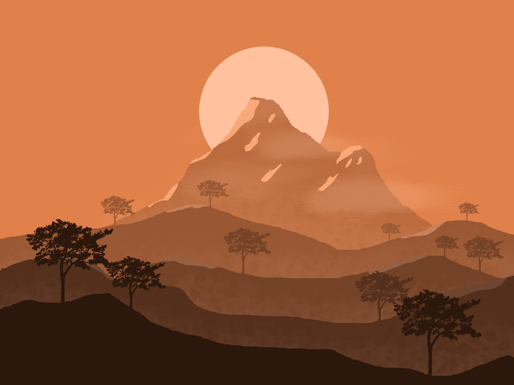
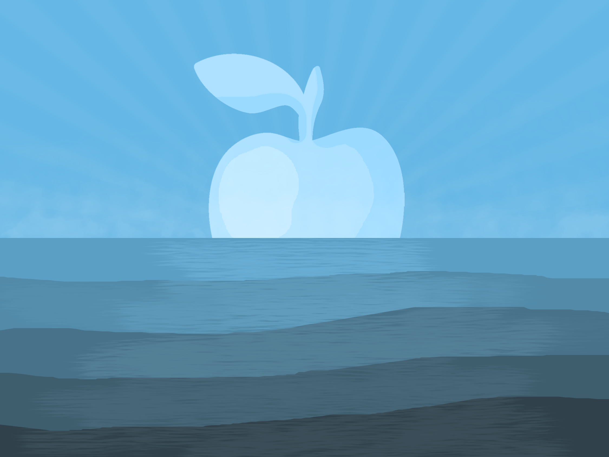

Tekenen
Voor het tekenen gebruik ik Krita en Paint.net. Krita gebruik ik vooral voor de speciale brushes (kwasten, potloden, stempels, etc.) die ze hebben. Paint.net gebruik ik voor de andere features die Krita niet heeft of die in Krita raar werken, zoals: een blur, een pixel-potlood (goed voor pixel-art), vormen, etc. Hieronder heb ik een paar tekekingen die ik heb gemaakt.
Mijn tekeningen

Dit is de achtergrond op mijn computer thuis.

Deze tekeking had ik gemaakt voor een opdracht van KuA (Kunst Algemeen).